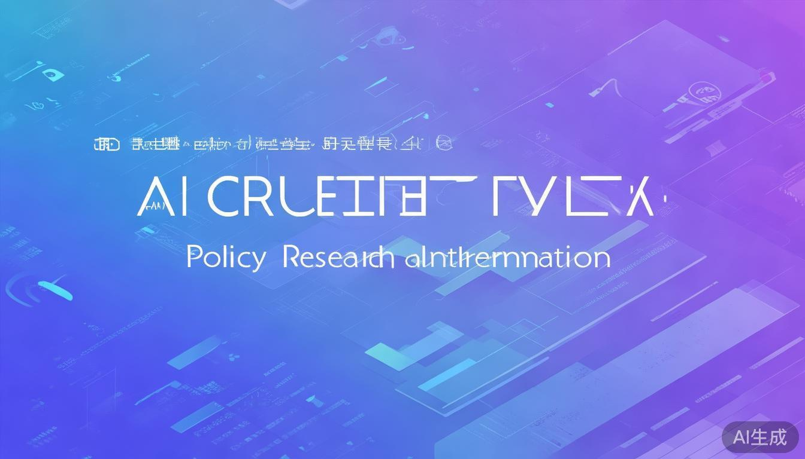

白驹 · 全局大脑 · AI 创作纪元
公务员AI应用指南
公文写作、政策解读、数据分析、群众服务……AI正在改变公务员的工作方式。这份指南教你如何在合规前提下用好AI。
一、公文写作
1. 通知/报告/总结
AI应用：
- 输入核心内容，AI生成规范格式
- AI检查公文格式（标题、文号、落款）
- AI优化语言表达，更正式、更简洁
提示词示例：
你是一位资深公文写作专家。请根据以下内容，写一份[通知/报告/请示]：
1. 符合《党政机关公文格式》国家标准
2. 语言正式、准确、简洁
3. 结构完整（标题/主送机关/正文/落款）
4. 内容要点：[填入具体内容]
2. 领导讲话稿
AI应用：
- 根据场合和主题生成讲话稿框架
- AI提供金句和案例
- 人工修改，加入领导个人风格
3. 会议纪要
AI应用：
- 录音转文字（讯飞听见等）
- AI提取关键决议和待办事项
- AI生成规范格式的会议纪要
二、政策研究与解读

1. 政策检索
AI应用：
- 输入关键词，AI检索相关政策文件
- AI对比不同政策的异同
- AI生成政策汇编
2. 政策解读
AI应用：
- AI用通俗语言解读政策要点
- AI分析政策对特定群体的影响
- AI生成政策问答（FAQ）
3. 调研报告
AI应用：
- AI分析调研数据，生成图表
- AI撰写调研报告初稿
- 人工审核数据，加入深度分析
三、数据分析与决策支持
1. 数据统计
AI应用：
- AI快速处理Excel数据，生成统计报表
- AI识别数据异常和趋势
- AI生成可视化图表
2. 舆情分析
AI应用：
- AI监测网络舆情，识别热点话题
- AI分析情感倾向（正面/负面/中性）
- AI生成舆情简报
四、群众服务
1. 智能问答
AI应用：
- AI回答群众常见问题（办事流程、所需材料）
- 7×24小时在线，减少人工压力
- 复杂问题转人工处理
2. 材料预审
AI应用：
- AI检查群众提交的材料是否齐全
- AI提示需要补充的内容
- 减少群众跑腿次数
五、合规与安全
核心原则
- 保密红线：涉密信息绝不输入AI系统
- 数据脱敏：涉及个人信息必须脱敏
- 人工审核：AI生成内容必须人工审核后才能使用
- 责任明确：AI是工具，责任由使用人承担
推荐做法
- 使用国产AI：优先使用通过安全评估的国产大模型（DeepSeek、文心一言、通义千问等）
- 本地部署：敏感部门可考虑本地部署开源模型
- 培训先行：组织AI使用培训，明确边界和规范
六、实战案例
案例1：某市政务服务中心
- 引入AI智能问答系统
- 常见问题自动回复率80%
- 群众等待时间缩短50%
案例2：某省政策研究室
- 用AI辅助政策比较研究
- 调研报告撰写时间缩短40%
- 政策建议被领导采纳率提升
案例3：某区统计局
- 用AI处理经济普查数据
- 数据清洗和初步分析自动化
- 人工专注深度分析和报告撰写
七、常见问题
Q：用AI写公文算作弊吗？ A：不算。AI是工具，和Word、Excel一样。关键是内容准确、符合规范、体现真实意图。
Q：AI会泄露工作秘密吗？ A：只要遵守「涉密信息不上网」原则，使用正规平台，风险可控。敏感信息脱敏后再处理。
Q：领导会发现我用了AI吗？ A：AI生成内容需要人工修改和审核。好的AI辅助产出，领导只会觉得你效率提高了。
核心理念：AI是公务员的「智能助手」，帮助从繁琐事务中解放出来，专注于政策研究和群众服务的核心工作。
出处声明：本页内容为白驹全局大脑原创，或已标注引用来源；改编内容遵循原始项目许可证（如 MIT / CC），不侵犯原作者权益。若引用内容涉及版权问题，请联系我们更正。